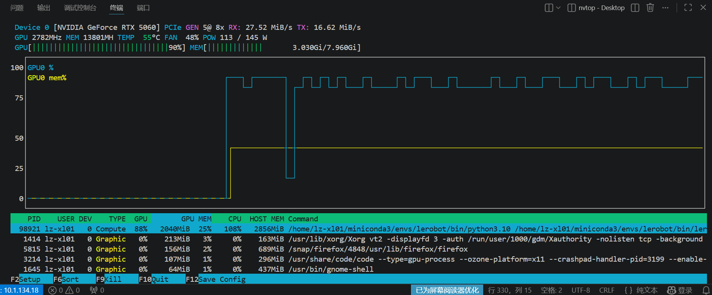

数据整理与 ACT 模型训练
把 EXP-01 录下的示范数据喂给 ACT（Action Chunking with Transformers）：看懂 CNN + Transformer 编码器-解码器 + CVAE 的三段结构，跑通 lerobot-train 并从日志中读懂 loss 的每一次下降。
00课程节奏：五星学习法 · 8 段微课（每段 ≤ 15 min）
本实验按五星学习法组织：先用一个真实故障聚焦问题，再激活旧知（CNN、Transformer、损失函数、VAE），接着示证新知（ACT 的 CNN+Transformer+CVAE 三段结构），然后动手应用新知完成数据整理与训练并读懂日志，最后借排障与超参方法论融会贯通。全程切成 8 段微课、每段不超过 15 分钟，段间停顿 1~2 分钟消化；纯讲授合计约 100 分钟，其余课时用于动手实操与个别辅导。
| 课段 | 五星阶段 | 时长 | 对应章节 | 本段任务 |
|---|---|---|---|---|
| 课段 1 | 聚焦问题 | 12 min | §01 + §02 前半 | 抛出"loss 不降/显存爆/episode 为 0"故障，明确本课要解决的目标 |
| 课段 2 | 激活旧知 | 8 min | §02 后半 | 用 CNN、Transformer、损失函数、VAE 四条旧知解释故障成因 |
| 课段 3 | 示证新知 | 15 min | §03 | 对照数据集、源码、脚本、监控工具认识训练物料清单 |
| 课段 4 | 示证新知 | 12 min | §06（回看 §02 流程） | 看懂"CNN 看 → Transformer 想 → CVAE 即兴 → chunk 出手"结构 |
| 课段 5 | 应用新知 | 15 min | §04 Step1~3 + §5 命令①② | 查看数据、清理输出、启动训练命令（边讲边演） |
| 课段 6 | 应用新知 | 15 min | §04 Step4~6 + §5 命令③④ | 核对启动日志、盯 loss 下降、nvtop 看卡、收检查点 |
| 课段 7 | 应用新知 | 10 min | §07 | 超参滑杆自测，建立 lr/batch/steps 与收敛形态的直觉 |
| 课段 8 | 融会贯通 | 13 min | §08~§10 | 排障口诀收口，超参方法论与思考题拔高迁移 |
讲课提示：课段 1/2 以讲授 + 提问为主；课段 3~4 用源码 + 动画；课段 5~6 边讲边演命令行与日志；课段 7 学员独立完成；课段 8 答疑拔高。段间停顿 1~2 分钟。
01实验目标课段 1 · 聚焦问题 · 12 min
查看并打包本地数据集：~/.cache/huggingface/lerobot/liming/put_cube_plate/，理解 zip 打包的用途（上传云端，本地训练不需要）。
跑通 lerobot-train --policy.type=act，能逐项解释启动日志打印的全部超参（batch_size、steps、lr、kl_weight、chunk_size…）。
读懂周期日志 step / loss / grdn / lr 的含义，判断训练是否收敛；训练结束能在 outputs/…/checkpoints/last/pretrained_model 找到检查点。
完成 ≥5000 步训练，末段 loss 相对首个日志点显著下降（如 8.0 → 1.0 以下量级），且 num_learnable_params=51597190（52M）与文档一致。
建立"改一个超参 → rm 旧输出 → 重跑对照 → 记录日志差异"的实验习惯，这是调参不迷路的底层纪律。

nvtop / nvidia-smi 实时显示显存、算力与进程占用，用于确认训练确实跑在 GPU 上、显存未爆02核心原理：ACT 是怎样"学会"一个任务的课段 1 收尾 + 课段 2 · 激活旧知 · 8 min
8.088 不动，或者干脆 CUDA out of memory 显存爆了，再或者启动日志显示数据集 num_episodes=0——命令明明跑完了，模型却啥也没学到。问题出在哪？带着这三个故障听完全课，到课段 6 你会亲手让 loss 稳稳下降。通俗类比：学做饭时，你一边看食材和锅（图像 / 状态），一边在脑中"放映"老师连贯的切炒动作（示范数据），越看越多就形成了"看到这一步 → 手直接这样做"的肌肉记忆。ACT 就是这套肌肉记忆的数学版，分三步走：
① CNN 编码器（看）——每张摄像头图像过一个预训练 ResNet18（ResNet18_Weights.IMAGENET1K_V1），压成一串特征向量；机器人 6 维关节状态也一起拼进去。相当于把"锅里的画面"压缩成大脑能处理的重点信息。
② Transformer 编码器-解码器（想）——编码器 4 层、解码器 1 层，维度 512、8 头注意力、前馈 3200。关键创新是 动作分块（action chunking）：模型不是一次预测一步，而是一次吐出未来 chunk_size=100 步的动作序列，避免"走一步看一步"导致的抖动与误差累积。
③ CVAE（造多样性的手）——同一个场景，人示范的动作也会有细微差异。CVAE 在训练时往瓶颈层 latent_dim=32 塞一个随机变量 z，强迫模型学会"同场景不同微动作都合理"；损失函数就是指导文件中的核心公式：loss = reconstruction_loss + kl_weight × kld_loss（kl_weight=10）。重建损失管"像不像示范"，KL 损失管"随机变量像不像标准正态"——一个像老师，一个保持即兴的自由度。
自回归 vs 并行：自回归模型（如 GPT 式输出、某些扩散策略）一 token 一 token 地续写动作，序列长了慢；ACT 借解码器一次性并行输出整段动作块，推理快、适合真机实时控制。代价是长程依赖表达弱——两条路线的取舍在 EXP-04 会再次遇到。
cd ~/.cache/huggingface/lerobot/liming/put_cube_plate/，确认存在 data/（parquet 状态-动作序列）与 videos/（编码后视频）两个子目录，文件数与 episode 数一致——这是训练能读到数据的硬证据。configuration_act.py：num_encoder_layers=4、num_decoder_layers=1、dim_model=518→512、n_heads=8、dim_feedforward=3200、dropout=0.1、use_vae=True、latent_dim=32、kl_weight=10、optimizer_lr=1e-5、weight_decay=1e-4。03环境与材料课段 3 · 示证新知 · 15 min
- ✓EXP-01 产出的可用数据集（示例：
liming/put_cube_plate，num_episodes ≥ 3，正式建议 ≥ 50） - ✓训练机 LeRobot 0.4.1 + CUDA 可用 GPU（日志
policy.device=cuda） - ✓源码参考：
lerobot-0.4.1/src/lerobot/policies/act/（modeling_act.py、configuration_act.py）与docs/source/act.mdx - ✓脚本参考：
command/5_train.sh（含数据集命名与 SAVE_FREQ 分段保存逻辑） - ✓监控工具：终端日志（log_freq=100）+
nvtop看 GPU 占用 - ✓输出目录：
./outputs/put_cube_on_plate_act（每次实验前 rm -rf 清空，避免新旧日志混淆） - ✓时间口径：命令行 steps=1000 是最小示例，指导文档示例日志跑到 step 5000，正式训练按 ≥5000 步准备
- ✓对照基线：指导文档示例日志起始量级为
loss:8.088、grdn≈10（见 §8 表）——换数据集后绝对值不同属正常，只比下降趋势
04实操步骤课段 5~6 · 应用新知 · 2×15 min
整条链路按"看数据 → 打包（可选）→ 清输出 → 起训练 → 盯日志 → 收检查点"六步推进，每步都有可核验的产出物：
zip -r put_cube_plate.zip ~/.cache/huggingface/lerobot/liming/put_cube_plate——仅当要把数据搬去云端时才需要。rm -rf …/outputs/put_cube_on_plate_act，然后启动训练命令（§5 第一条）。nvtop 观察显存与算力占用。Checkpoint policy after step 5000 与 End of training 即完成，检查点位于 outputs/put_cube_on_plate_act/checkpoints/last/pretrained_model。Creating dataset → ② Creating policy（ACT 配置全量打印）→ ③ Creating optimizer（AdamW + lr schedule）→ ④ Effective batch size: 32 → ⑤ num_learnable_params=51597190 (52M) → ⑥ Start offline training。看到第⑥行即表示进入正式训练循环。step / loss / grdn / lr：step 稳步涨说明数据吞吐正常；loss 持续降说明策略在学；grdn（梯度范数）被 grad_clip_norm=10.0 裁剪，长期贴 10 则学习不稳定；lr 由调度器控制缓慢变化。loss:8.088 → 逐段下降 才是健康信号。05关键命令随课段 5 / 6 对照使用
四段命令依次完成"数据就位 → 启动训练 → 读日志 → 看卡"，参数均取自第 10 章原文：
# ── 1) 查看与打包数据（第 10 章） cd ~/.cache/huggingface/lerobot/liming/put_cube_plate/ zip -r put_cube_plate.zip ~/.cache/huggingface/lerobot/liming/put_cube_plate # ── 2) ACT 训练（第 10 章原文命令） rm -rf /home/lz-xl01/lerobot-0.4.1/outputs/put_cube_on_plate_act lerobot-train --dataset.repo_id=liming/put_cube_plate --policy.type=act --policy.repo_id=put_cube_on_plate_act --policy.push_to_hub=false --batch_size=8 --steps=1000 --output_dir=./outputs/put_cube_on_plate_act --policy.device=cuda --num_workers=4 --wandb.enable=false --log_freq=100 --save_freq=1000 --eval_freq=1000 # ── 3) 健康日志长这样（step 涨、loss 降） step:100 smpl:3K ep:7 epch:2.23 loss:8.088 grdn:133.488 lr:1.0e-05 updt_s:0.969 data_s:0.048 … loss 持续下降 → Checkpoint policy after step 5000 → End of training # ── 4) GPU 监控 nvtop
- ✓grdn（梯度范数）：受 grad_clip_norm=10.0 约束，长期贴着 10 说明学习不稳定。
- ✓lr：1e-5 AdamW，随调度缓慢变化；data_s 是取数耗时，持续偏大要减 num_workers 或查 IO。
- ✓epch：数据集小的时候很快 >10 是正常现象，关注 loss 而非 epoch。
- ✓smpl：已消耗的样本计数（3K = 3072），配合 step 判断数据吞吐是否正常。
- ✓updt_s：单步更新耗时，突然变大先查是否有别的进程抢 GPU。
Checkpoint policy after step 5000 与 End of training 后，进入 outputs/put_cube_on_plate_act/checkpoints/last/pretrained_model 确认存在 config.json（策略配置）、model.safetensors（权重）与 processor 目录——三件齐全即可交给 EXP-03 加载推理。06动画演示：ACT 编码器-解码器（CNN + Transformer + CVAE）课段 4 · 示证新知 · 12 min
把三段连起来读：看（CNN）→ 想（Transformer）→ 带一点即兴（CVAE）→ 连贯出手（chunk）。训练就是不断微调这三段的权重，让输出的动作块在"重建损失 + KL 损失"的合力下越来越像人类示范。
07互动练习：超参滑杆看训练曲线模拟课段 7 · 应用新知 · 10 min
说明：曲线为教学模拟，用于建立"lr / batch / steps 与收敛形态"的直觉；真实曲线以终端 loss 日志为准。
08常见问题课段 8 · 融会贯通 · 13 min
- ✓显存不足（OOM / CUDA out of memory）：优先降
batch_size（8 → 4），再关无关程序、确认没有别的训练占卡（nvtop）。 - ✓数据集读不到 / episode 数为 0：检查
--dataset.repo_id是否与缓存目录名一致（liming/put_cube_plate）、上一实验是否留下空目录（先 rm -rf 重建）。 - ✓loss 不降：看 lr 是否被改大、数据是否其实是 reset 期垃圾片段、steps 是否太短（< 1000 看不出趋势）。
- ✓data_s 持续很大：磁盘慢或 num_workers 过高，调回 4 或把数据集移到本机 SSD。
- ✓找不到检查点：确认
--output_dir与save_freq，最终应有checkpoints/last/pretrained_model（含 config.json、weights、processor）。 - ✓磁盘被检查点写满：分段检查点按 save_freq 持续累积，跑长训练前先看剩余空间，旧实验的 output 目录及时归档清理。
| 日志线索 | 症状 | 处置 |
|---|---|---|
loss:8.088 不动 | 学习率过低或数据问题 | 核对 cfg.steps / lr，抽查数据集 |
grdn ≈ 10.0 | 梯度被 clip 顶满，训练剧烈 | 降 lr 或增大 batch |
CUDA out of memory | 显存不足 | batch_size 减半 |
num_episodes=3 | 数据太少 | 回 EXP-01 补采到 ≥50 组 |
checkpoints/last/pretrained_model 目录，缺一项先补齐再进 EXP-03。09拓展阅读课段 8 · 融会贯通
docs/source/act.mdx 给出方法论出处（ACT 论文：Action Chunking with Transformers + CVAE）；② command/5_train.sh 的 SAVE_FREQ 分段保存策略（小步数阶段存密、大步数存疏）是工程省盘技巧；③ image_transforms 六种数据增强（ColorJitter、RandomAffine、SharpnessJitter…）默认 enable:false——双臂场景颜色/角度增强是否有效值得实验；④ 掌握 ACT 后可对照阅读 diffusion policy（扩散策略），体会"一次出块"与"迭代去噪"两条生成范式。10思考题课段 8 · 融会贯通
kl_weight=0 时模型可能退化成什么样？